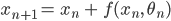
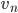
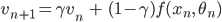
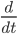
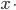
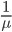
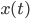
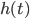

. The benefit of such an approach is discussed similarly in the two papers: reduced memory load thanks to invertibility and larger representation capacity thanks to the momentum in the ODE regime.
. The benefit of such an approach is discussed similarly in the two papers: reduced memory load thanks to invertibility and larger representation capacity thanks to the momentum in the ODE regime.Plagiarism
We argue that the article “Momentum residual neural networks” by Michael Sander, Pierre Ablin, Mathieu Blondel and Gabriel Peyré, published at the ICML conference in 2021, hereafter referred to as “Paper A”, has been plagiarized by the paper “m-RevNet: Deep Reversible Neural Networks with Momentum” by Duo Li and Shang-Hua Gao, accepted for publication at the ICCV conference, hereinafter referred to as “Paper B”.
Paper A is available at https://arxiv.org/abs/2102.07870. It was first uploaded on the Arxiv on the 15th of February 2021, and the source code with documentation is available on github since February 17th at https://github.com/michaelsdr/momentumnet/.
Paper B is available at https://arxiv.org/abs/2108.05862. It was first uploaded on the Arxiv on the 12th of August 2021. The deadline for the ICCV paper submission was on the 17th of March 2021, which left a month to the authors of Paper B to plagiarize Paper A and to (presumably) use the provided source code.
ICCV follows the plagiarism guidelines exposed here: https://www.ieee.org/publications/rights/plagiarism/plagiarism.html
In the following, we describe many uncanny and systematic resemblances between Paper A and Paper B. These resemblances are so numerous that we argue that they cannot be attributed to chance, and therefore demonstrate plagiarism by the authors of Paper B.
The two papers propose the exact same idea: replacing the forward equation of a residual network, by a momentum equation with a velocity :, and . The benefit of such an approach is discussed similarly in the two papers: reduced memory load thanks to invertibility and larger representation capacity thanks to the momentum in the ODE regime.
Below is a table of the ressemblances between the two papers. In particular, two figures in Paper B are slightly modified figures of Paper A (change of colormaps, scaling). The propositions/examples of Paper B are all found in Paper A, with some notations changed. All of the arguments to explain the merits of the method in Paper B can be found in Paper A.
Paper A (Sander, Ablin, Blondel, Peyré) | Paper B (Duo Li and Shang-Hua Gao) | Notes |
Same figure, added vector field and changed colors. | ||
The three rows have the same meaning: closed form inversion = analytical reversal, same parameters = architecture preservation and unconstrained training = end-to-en optimization. The columns are shuffled, and Paper B added the ResNet baseline. | ||
Choice of the exact same initial dataset, four nested rings. The usual experiments as found e.g. in https://arxiv.org/abs/1904.01681 as cited by both papers rather use 2 nested rings. To the best of our knowledge, using four nested rings as an illustration had never been done before. | ||
This is the main contribution of the papers. The critical parameter “gamma” in Paper A becomes “1 - mu” in Paper B. | ||
[11] in Paper B is the same reference as [Teh et al] in Paper A. | ||
Maclaurin et al’s algorithm (cited as [26] in Paper B) is a key implementation technique that both papers propose to re-use. | ||
The propositions, and the proof, are identical. The notations have been slightly changed in Paper B: the time derivatives are denoted as , as opposed to in Paper A. | ||
The list of contributions of the papers are identical, albeit shuffled. | ||
Example 1 for in Paper B is a copy and paste of proposition 8 in the appendix of Paper A. The differential equation considered is exactly the same. The epsilon in Paper A plays the same role as in Paper B. The first equation in the proof of Proposition 8 in paper A is the same as Eq.14 in Paper B, up to a multiplication by a factor epsilon. The ordering in the solution for Paper A and for Paper B is exactly the same. | ||
Once again, the learning task is exactly the same: learn to represent the map x -> -x^3. To the best of our knowledge, such a task is not classical and we have not seen it in any other paper. | ||
The cited paper has the following figure which uses two nested rings. This served as an inspiration for our experiment with four nested rings. |